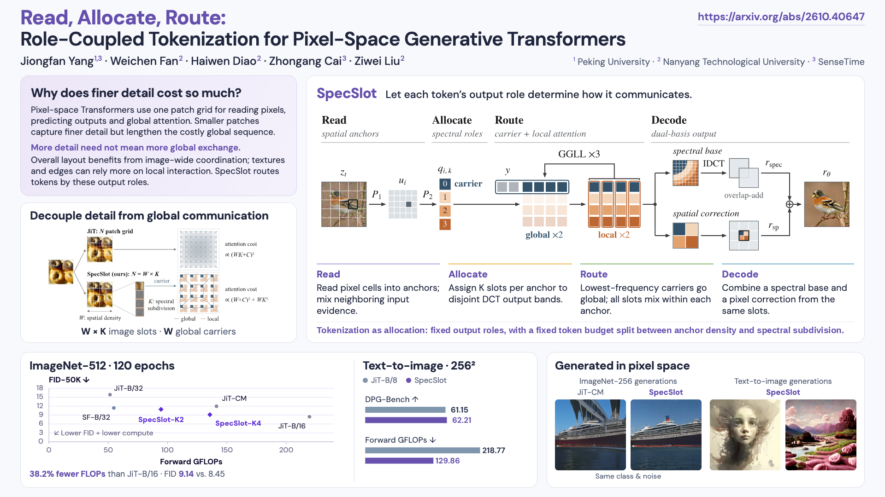
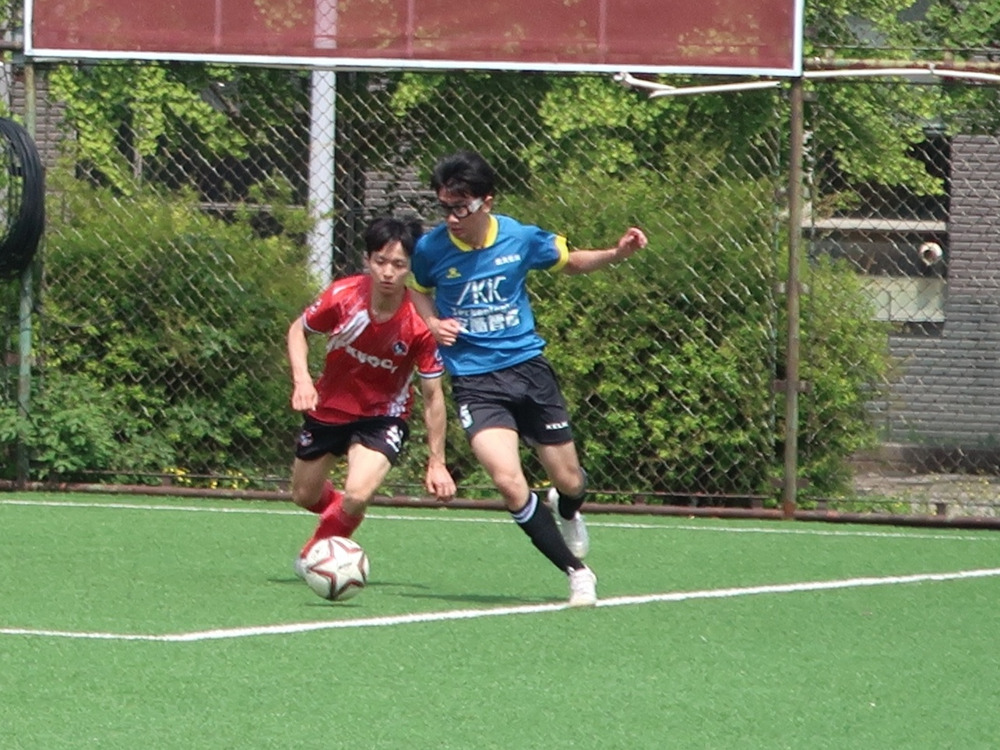

SpecSlot
Summer research with Assoc. Prof. Ziwei Liu on token allocation for pixel-space generative transformers.

Undergraduate researcher · Peking University · EECS 2027 · Beijing
I work on unified image and video generation, diffusion models, and computer vision.

I am an undergraduate student in Intelligence Science and Technology at Peking University, working with Prof. Yunhai Tong at MSALab@PKU.
I am currently a summer research intern in Assoc. Prof. Ziwei Liu's group at MMLab@NTU, where I study token allocation for pixel-space generative transformers. I have also worked as a research intern with Alibaba's Taobao and Tmall Group and SenseTime. My research interests include unified image and video generation, diffusion models, and computer vision.
Education
Peking University
B.S. in Intelligence Science and Technology
School of EECS · 2023-2027
Research focus
Unified visual generation
Image & video generation · diffusion models · computer vision
Summer research with Assoc. Prof. Ziwei Liu on token allocation for pixel-space generative transformers.




A Germany and Bayern Munich supporter for 13 years.
Honors & awards
I am always glad to exchange ideas about generative models, multimodal systems, and research.